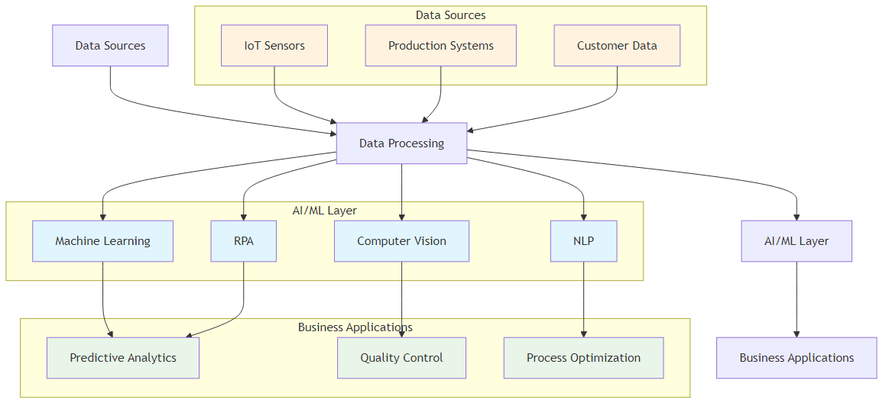

Author: Hari Mallepally
Version: 3.0
Publication Date: September 2025
Target Audience: Business Leaders, Operations
Professionals, MBA Students
“The future of operational excellence lies not in choosing between human expertise and Artificial Intelligence, but in orchestrating their perfect symphony.”
This book represents a fundamental shift in how we approach operational excellence in the digital age. As organizations worldwide grapple with the transformative power of artificial intelligence, there’s an urgent need for a comprehensive framework that bridges the gap between traditional operational methodologies and cutting-edge AI technologies.
The integration of AI into operational excellence represents one of the most significant transformations in business management since the advent of Lean and Six Sigma methodologies. This book serves as both a strategic roadmap and a practical manual for AI-driven operational transformation.
The business landscape is experiencing unprecedented disruption. Traditional operational models that once provided competitive advantages are now becoming liabilities in the face of AI-powered competitors. Organizations that fail to adapt risk obsolescence, while those that successfully integrate AI into their operational DNA are achieving unprecedented levels of efficiency, quality, and innovation.

Figure 1.1: AI Technology Stack Architecture - The layered approach showing how data flows from sources through processing to business applications
Consider the transformation happening across industries:
This comprehensive guide explores the intersection of Artificial Intelligence and operational excellence, providing practical insights, frameworks, and implementation strategies for organizations seeking to leverage AI for performance optimization. Drawing from real-world case studies, industry best practices, and cutting-edge research, this book serves as both a strategic roadmap and a practical manual for AI-driven operational transformation.
I invite you to connect with me on LinkedIn to continue the conversation about AI and operational excellence. I regularly share insights, case studies, and practical tips for implementing AI in business operations.
LinkedIn: Hari Mallepally https://www.linkedin.com/in/mallepally/
Connect for: - AI implementation insights and best practices - Operational excellence strategies - Industry case studies and success stories - Professional networking and collaboration - Speaking engagements and workshops
Feel free to reach out with questions, share your AI transformation journey, or discuss potential collaboration opportunities.
By the end of this book, the reader will be able to:
This book is organized into four main sections:
Section I: Foundations (Chapters 1-3) - Understanding the AI revolution in operations - Strategic implementation frameworks - Quality control and manufacturing applications
Section II: Traditional Methodologies Enhanced (Chapters 4-7) - Lean Six Sigma with AI - Total Productive Maintenance (TPM) 4.0 - Hoshin Kanri strategic planning - Total Quality Management (TQM) enhanced
Section III: Customer and Technology Focus (Chapters 8-11) - AI-powered customer satisfaction - Software development lifecycle - Leadership in the AI era - Prescriptive analytics and future trends
Section IV: Implementation and Resources (Chapters 12-14) - Real-world case studies - Implementation roadmap - Practical resources and career guidance
“Artificial Intelligence is not about replacing human intelligence; it’s about amplifying it, extending it, and enabling us to achieve what was previously impossible.” – Ginni Rometty
This chapter establishes the foundation for understanding how artificial intelligence transforms operational excellence. We begin by examining the historical context of operations management evolution, then explore the key AI technologies driving this transformation. The chapter concludes with practical frameworks for AI adoption and a look at why AI has become a strategic imperative for modern organizations.
Imagine a world where machines not only perform tasks but learn from every interaction, predict problems before they occur, and continuously optimize themselves. This is not science fiction—it’s the reality of operational excellence in the AI era. The landscape of operational excellence is undergoing a fundamental transformation, driven by the convergence of artificial intelligence, big data, and advanced analytics.
The shift in focus is profound. While traditional methods like Lean and Six Sigma primarily treated operations as a cost center to be minimized, AI transforms it into a source of exponential growth and competitive differentiation. For example, a company like Amazon has leveraged AI not just to cut costs in its logistics network but to create a logistical superpower that enables unprecedented speed and accuracy, driving market leadership.
Traditional operational excellence focused on: - Reactive problem-solving: Addressing issues after they occur - Manual analysis: Human-driven data interpretation - Static processes: Fixed methodologies and procedures - Limited scalability: Human capacity constraints
AI-enhanced operational excellence enables: - Predictive problem-solving: Preventing issues before they occur - Automated analysis: AI-driven pattern recognition and insights - Dynamic processes: Self-optimizing systems and procedures - Infinite scalability: Machine learning and automation capabilities
The journey of operational excellence has evolved through several distinct phases, each building upon the innovations of its predecessor:
Characteristics: - Manual processes and basic quality control - Reactive problem-solving approaches - Limited data collection and analysis - Subjective decision-making
Key Limitations: - High variability in quality and performance - Inefficient resource utilization - Limited ability to identify root causes - Slow response to market changes
Characteristics: - Systematic methodologies for process improvement - Statistical process control and measurement - Proactive quality management - Structured problem-solving approaches
Key Innovations: - DMAIC methodology for continuous improvement - Value stream mapping for waste elimination - Statistical tools for data analysis - Standardized work procedures
Characteristics: - Introduction of ERP systems and basic automation - Real-time data collection capabilities - Basic process automation - Digital workflow management
Key Advancements: - Enterprise resource planning systems - Automated data collection and reporting - Basic predictive analytics - Digital process documentation
Characteristics: - Predictive and prescriptive analytics - Autonomous decision-making systems - Continuous learning and optimization - Intelligent automation
Key Capabilities: - Machine learning for pattern recognition - Natural language processing for unstructured data - Computer vision for quality control - Robotic process automation for repetitive tasks
The AI revolution in operations is powered by five core technologies that, when combined, create a comprehensive operational intelligence system:
Machine learning is the brain of AI-enhanced operations, enabling systems to learn from data and make increasingly accurate predictions over time.